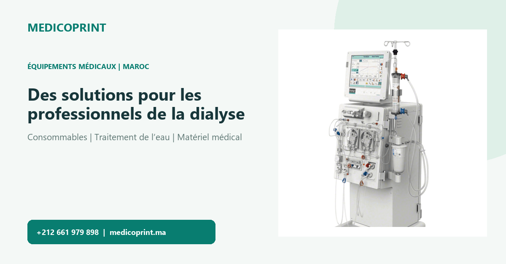
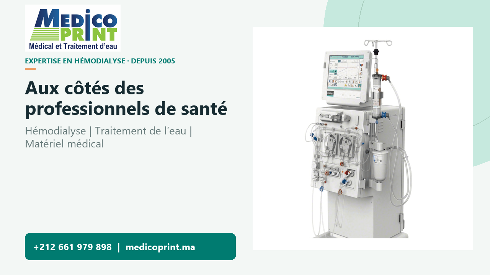
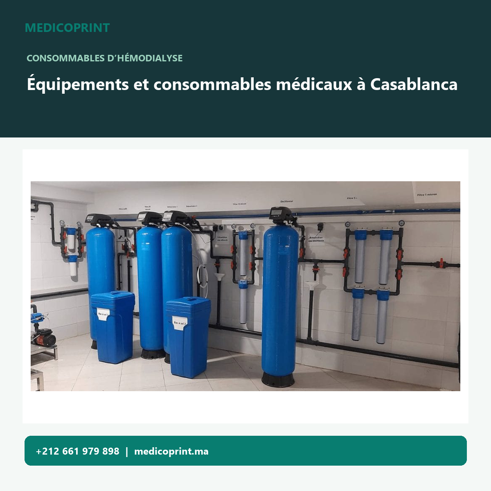
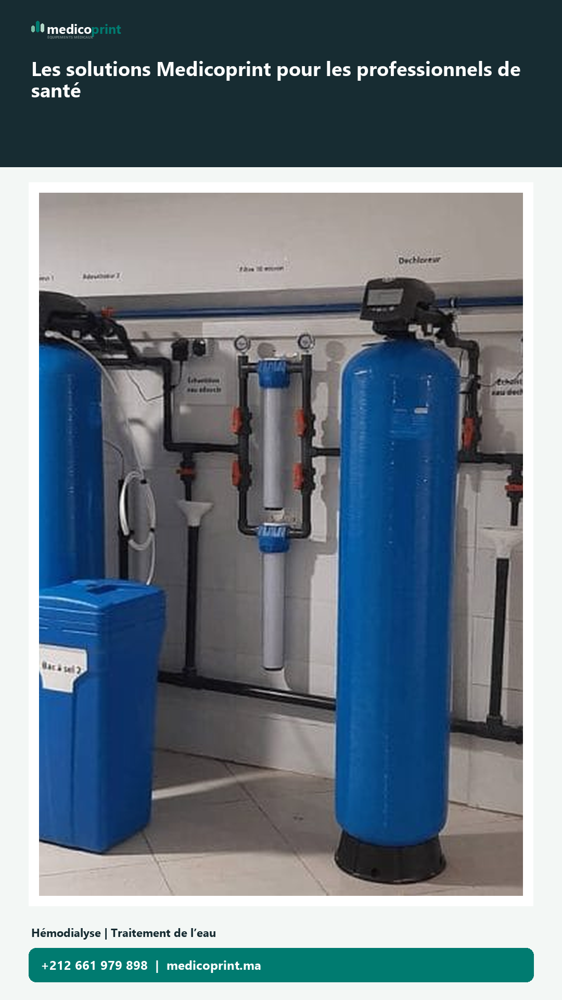

Campagne de lancement
Medicoprint sur les réseaux
Une série d’aperçus séparés, inspirés du site officiel et des visuels déjà préparés pour la marque.

Page entreprise, description et publication de lancement.
Voir l’aperçu ↗
Profil professionnel et aperçu de publication produit.
Voir l’aperçu ↗
YouTube
Chaîne de marque et vidéo de présentation horizontale.
Voir l’aperçu ↗
Page entreprise et publication de lancement en vidéo.
Voir l’aperçu ↗
TikTok
Profil professionnel et vidéo verticale de présentation.
Voir l’aperçu ↗